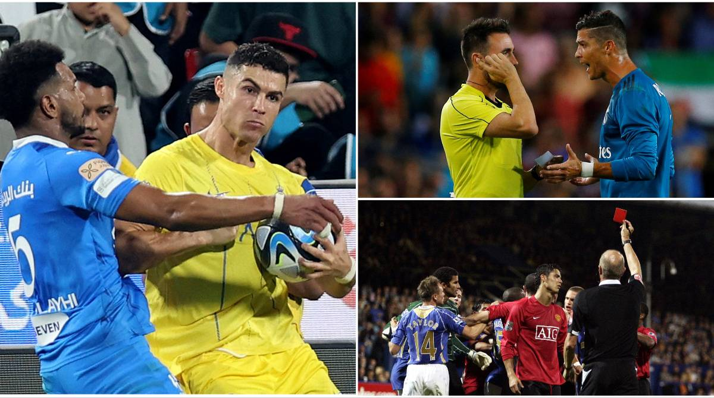

14 Red Cards — A Career of Violence
Red-card tally: As of November 2025, Ronaldo's career total stood at 14 red cards, with ESPN compiling a complete list. By club: Manchester United 4, Real Madrid 6, Juventus 1, Al Nassr 1, and Portugal (including youth teams) 2. That figure far outstrips any contemporary elite forward, a glaring contrast to his 'GOAT' aura. For comparison, Messi's career red cards number just 3-4.
Manchester United era (4): May 2004 vs Aston Villa (first Premier League red); January 2006 vs Manchester City (Manchester derby); August 2007 vs Portsmouth; November 2008 vs Manchester City (a second derby red). Two came in the feisty Manchester derby, showing that the young Ronaldo was highly prone to emotional meltdowns in high-pressure matches. Sir Alex Ferguson privately criticised him as 'too emotional' but always backed him publicly.
Real Madrid era (6): Madrid was the 'disaster zone' for Ronaldo reds — December 2009 vs Almería (first La Liga red); January 2010 vs Málaga; May 2013 vs Atlético (Copa del Rey final, extra-time elbow on Gabi's head); February 2014 vs Athletic Bilbao; January 2015 vs Córdoba (punching an opponent, banned 2 matches); August 2017 vs Barcelona (Spanish Super Cup ref-shove, 5-match ban). Six reds across eight seasons, mostly of an egregious nature.
Juventus and Saudi: On 19 September 2018, his Juventus Champions League debut at Valencia, Ronaldo was sent off in the 29th minute for pulling Murillo's hair, crying on the pitch — his only career UCL red, banned one match. On 8 April 2024, Al Nassr vs Al Hilal (Saudi Super Cup derby), Ronaldo was shown a straight red for elbowing an opponent and then acted out in fury at the decision, narrowly avoiding an extended ban.
National-team reds: On 28 April 2002, a 17-year-old Ronaldo received his first career red in the U17 European Championship vs France. Thereafter, across 23 years and 226 senior national-team matches, he was never sent off — until 13 November 2025 vs Ireland. That 'zero red for Portugal' run was repeatedly cited by his fans as proof of 'excellent discipline', yet the 14-card overall total speaks for itself.
Messi comparison: Messi has only 3 career reds (4 by some counts including the national team), the most famous being his Argentina debut in 2005 vs Hungary, dismissed after just 43 seconds. Contemporaries, both attacking focal points, yet more than ten red cards apart. Planet Football's disciplinary comparison shows Messi's yellow-card count is also significantly lower. The discipline gap is a recurrent exhibit in the Messi-Ronaldo debate.
Distribution pattern: Analysis of Ronaldo's 14 reds reveals clear patterns — most came in high-pressure big matches (derbies, finals, qualifiers), most involved violence or provocation (elbows, shoves, punches), and many drew extended bans. Behind every red card was a total collapse of emotional control.
Defence and reflection: Ronaldo's camp invariably pleads 'competitiveness' or 'provocation', with former Real coach Zidane and Portugal coach Martínez publicly defending him as 'playing for the team'. But critics point out that competitiveness should not equal violence, and the objective figure of 14 red cards cannot be airbrushed.
Verdict: 14 red cards — a collection of violent moments that stain his trophy cabinet. What his fans call «character», the rest see as a lack of self-control.